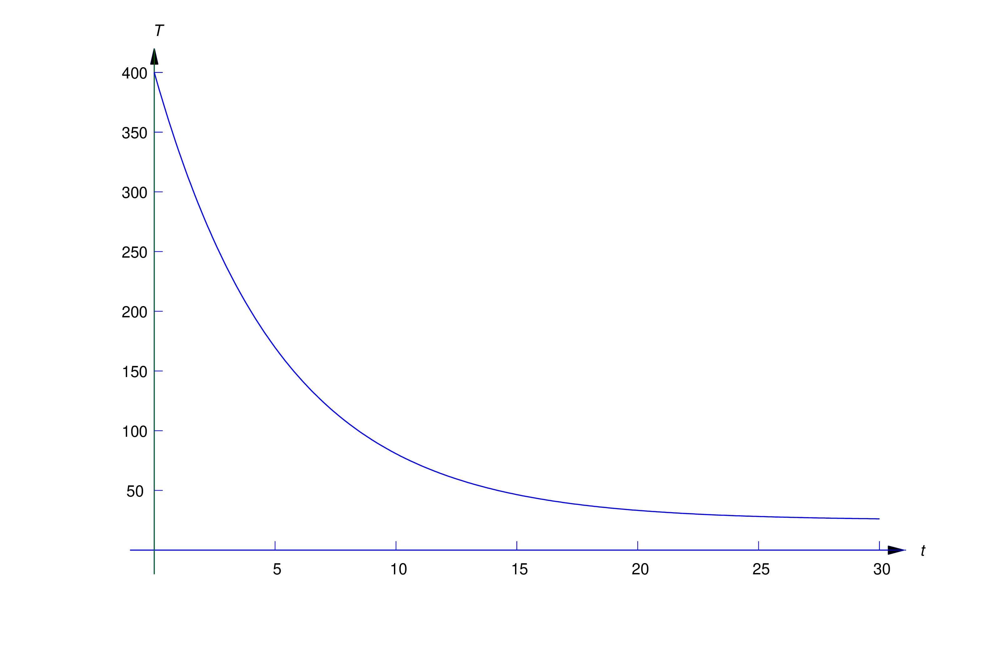
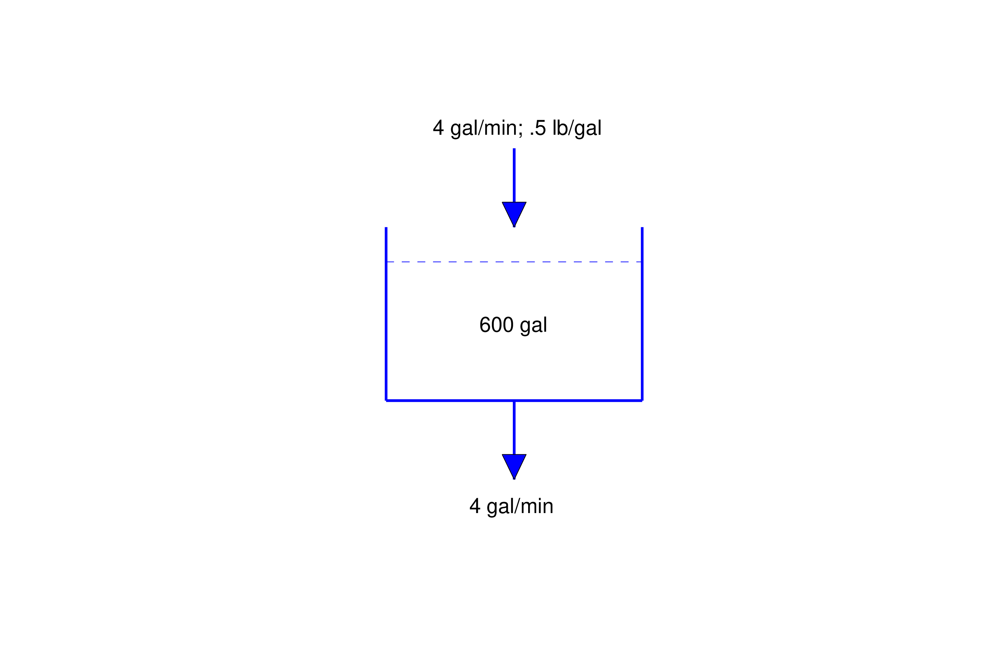
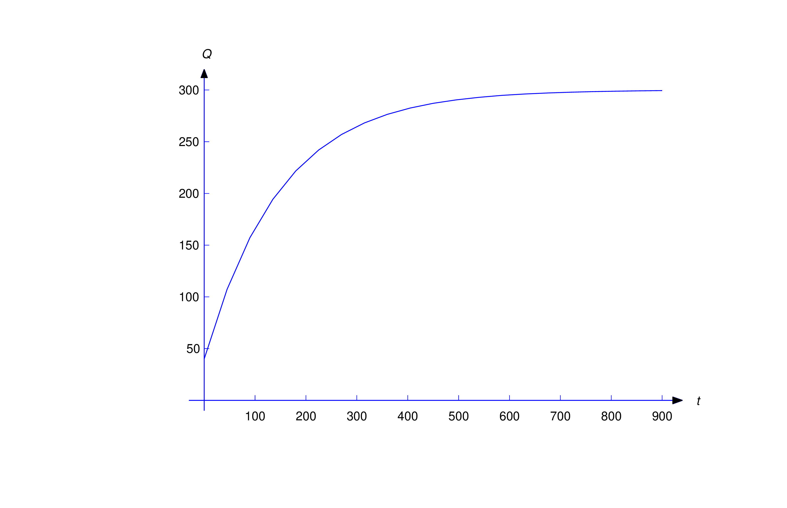
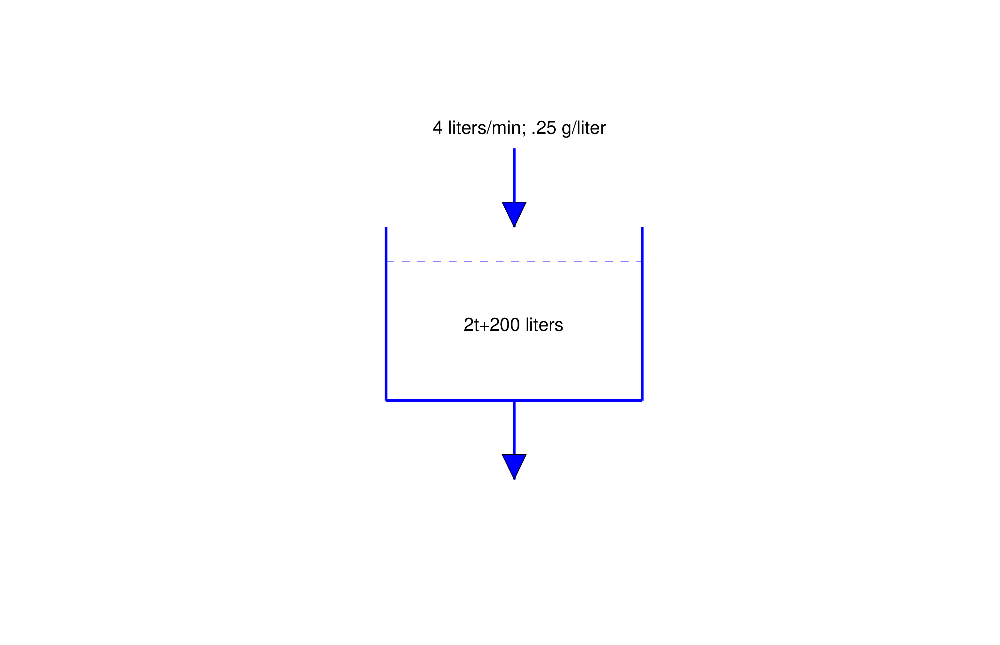

Newton’s law of cooling states that if an object with temperature \(T(t)\)
at time \(t\) is in a medium with temperature \(T_m(t)\), the rate of
change of \(T\) at time \(t\) is proportional to \(T(t)-T_m(t)\); thus,
\(T\) satisfies a differential equation of the form \begin {equation}
\label {eq:4.2.1} T'=-k(T-T_m)\end {equation}
Here \(k > 0\), since the temperature of the object must decrease if
\(T > T_m\), or increase if \(T < T_m\). We’ll call \(k\) the
temperature decay constant of the medium
.
For simplicity, in this section we’ll assume that the medium is maintained
at a constant temperature \(T_m\). This is another example of building a
simple mathematical model for a physical phenomenon. Like most
mathematical models it has its limitations. For example, it’s reasonable
to assume that the temperature of a room remains approximately constant if
the cooling object is a cup of coffee, but perhaps not if it’s a huge
cauldron of molten metal. (For more on this see Exercise
17
.)
To solve (4.2.1), we rewrite it as \[ T'+kT=kT_m\] Since \(e^{-kt}\) is a solution of the
complementary equation, the solutions of this equation are of the form
\(T=ue^{-kt}\), where \(u'e^{-kt}=kT_m\), so \(u'=kT_me^{kt}\). Hence, \[
u=T_me^{kt}+c\] so \[ T=ue^{-kt}=T_m+ce^{-kt}\] If \(T(0)=T_0\), setting
\(t=0\) here yields \(c=T_0-T_m\), so \begin {equation} \label {eq:4.2.2}
T=T_m+(T_0-T_m)e^{-kt}\end {equation}
Note that \(T-T_m\) decays exponentially, with decay constant \(k\).
Example 4.2.1
A ceramic insulator is baked at \(400^\circ \)C and cooled in a room in
which the temperature is \(25^\circ \)C. After 4 minutes the temperature
of the insulator is \(200^\circ \)C. What is its temperature after 8
minutes?
Solution
Here \(T_0=400\) and \(T_m=25\), so (4.2.2) becomes \begin {equation} \label {eq:4.2.3} T=25+375e^{-kt}\end
{equation}
We determine \(k\) from the stated condition that \(T(4)=200\); that is,
\[ 200=25+375e^{-4k}\] hence, \[ e^{-4k} = {175\over 375} = {7\over 15}\]
Taking logarithms and solving for \(k\) yields \[ k=-{1\over 4} \ln
{7\over 15}={1\over 4}\ln {15\over 7}\] Substituting this into (4.2.3) yields \[ T=25+375 e^{-{t\over 4} \ln {15\over 7}} \] (Figure
4.2.1
). Therefore the temperature of the insulator after 8 minutes is \[\begin
{array}{rl} T(8) & \displaystyle = 25+375 e^{-2 \ln {15\over 7}}
\\[9pt] & \displaystyle = 25+375 \left ({7\over 15}\right )^2 \approx
107^\circ \mbox {C}\end {array}\]

Figure 4.2.1\(T=25+375e^{-(t/4)\ln 15/7}\)
Example 4.2.2
An object with temperature \(72^\circ \)F is placed outside, where the
temperature is \(-20^\circ \)F. At 11:05 the temperature of the object
is \(60^\circ \)F and at 11:07 its temperature is \(50^\circ \)F. At
what time was the object placed outside?
Solution
Let \(T(t)\) be the temperature of the object at time \(t\). For
convenience, we choose the origin \(t_0=0\) of the time scale to be 11:05
so that \(T_0=60\). We must determine the time \(\tau \) when \(T(\tau
)=72\). Substituting \(T_0=60\) and \(T_m=-20\) into (4.2.2) yields \[ T = -20+\bigl (60-(-20)\bigr )e^{-kt} \] or \begin {equation}
\label {eq:4.2.4} T = -20+80e^{-kt}\end {equation}
We obtain \(k\) from the stated condition that the temperature of the
object is 50\(^\circ \)F at 11:07. Since 11:07 is \(t=2\) on our time
scale, we can determine \(k\) by substituting \(T=50\) and \(t=2\) into (4.2.4) to obtain \[ 50 = -20+80e^{-2k} \] (Figure
4.2.2
); hence, \[ e^{-2k}={70\over 80}={7\over 8}\] Taking logarithms and
solving for \(k\) yields \[ k =-{1\over 2} \ln {7\over 8} = {1\over 2} \ln
{8\over 7}\] Substituting this into (4.2.4) yields \[ T = -20+80 e^{-{t\over 2}\ln {8\over 7}}\] and the condition
\(T(\tau )=72\) implies that \[ 72 =-20+80 e^{-{\tau \over 2} \ln {8\over
7}}\] hence, \[ e^{-{\tau \over 2} \ln {8\over 7}} ={92\over 80} =
{23\over 20}\] Taking logarithms and solving for \(\tau \) yields \[ \tau
= -{2 \ln {23\over 20}\over \ln {8\over 7}} \approx -2.09\ \mbox {min}\]
Therefore the object was placed outside about 2 minutes and 5 seconds
before 11:05; that is, at 11:02:55.
In the next two examples a saltwater solution with a given concentration
(weight of salt per unit volume of solution) is added at a specified rate
to a tank that initially contains saltwater with a different
concentration. The problem is to determine the quantity of salt in the
tank as a function of time. This is an example of a
mixing problem
. To construct a tractable mathematical model for mixing problems we
assume in our examples (and most exercises) that the mixture is stirred
instantly so that the salt is always uniformly distributed throughout the
mixture. Exercises
22
and
23
deal with situations where this isn’t so, but the distribution of salt
becomes approximately uniform as \(t\to \infty \).
Example 4.2.3
A tank initially contains 40 pounds of salt dissolved in 600 gallons of
water. Starting at \(t_0 = 0\), water that contains 1/2 pound of salt
per gallon is poured into the tank at the rate of 4 gal/min and the
mixture is drained from the tank at the same rate (Figure
4.2.3
).
(a)
Find a differential equation for the quantity \(Q(t)\) of salt in
the tank at time \(t > 0\), and solve the equation to determine
\(Q(t)\).
(b)
Find \(\lim _{t\to \infty }Q(t)\).

Figure 4.2.3A mixing problem
S
OLUTION
(
a)
To find a differential equation for \(Q\), we must use the given
information to derive an expression for \(Q'\). But \(Q'\) is the rate of
change of the quantity of salt in the tank changes with respect to time;
thus, if
rate in
denotes the rate at which salt enters the tank and
rate out
denotes the rate by which it leaves, then \begin {equation} \label
{eq:4.2.5} Q' = \mbox {rate in}-\mbox {rate out}\end {equation}
The rate in is \[ \left ({1\over 2}\ \mbox {lb/gal}\right ) \times (4\
\mbox {gal/min}) = 2\ \mbox {lb/min}\] Determining the rate out requires a
little more thought. We’re removing 4 gallons of the mixture per minute,
and there are always 600 gallons in the tank; that is, we’re removing
\(1/150\) of the mixture per minute. Since the salt is evenly distributed
in the mixture, we are also removing \(1/150\) of the salt per minute.
Therefore, if there are \(Q(t)\) pounds of salt in the tank at time \(t\),
the rate out at any time \(t\) is \(Q(t)/150\). Alternatively, we can
arrive at this conclusion by arguing that \[ \begin {array}{lcl} \mbox
{rate out} & = & (\mbox {concentration})\times (\mbox {rate of
flow out})\\[6pt] \mbox {}&=&(\mbox {lb/gal})\times (\mbox
{gal/min})\\[10pt] &=&\displaystyle {Q(t)\over 600}\times
4=\displaystyle {Q(t)\over 150}\end {array} \] We can now write (4.2.5) as \[ Q' = 2-{Q\over 150}\] This first order equation can be rewritten
as \[ Q'+{Q\over 150} = 2\] Since \(e^{-t/150}\) is a solution of the
complementary equation, the solutions of this equation are of the form
\(Q=ue^{-t/150}\), where \(u'e^{-t/150}=2\), so \(u'=2e^{t/150}\). Hence,
\[ u = 300e^{t/150}+c\] so \begin {equation} \label {eq:4.2.6}
Q=ue^{-t/150}=300+ce^{-t/150} \end {equation}
(Figure
4.2.4
). Since \(Q(0)=40\), \(c=-260\); therefore, \[ Q=300-260e^{-t/150}\]
S
OLUTION
(
b)
From (4.2.6), we see that that \(\lim _{t \to \infty }Q(t)=300\) for any value of
\(Q(0)\). This is intuitively reasonable, since the incoming solution
contains 1/2 pound of salt per gallon and there are always 600 gallons of
water in the tank.
Example 4.2.4
A 500-liter tank initially contains 10 g of salt dissolved in 200 liters
of water. Starting at \(t_0=0\), water that contains 1/4 g of salt per
liter is poured into the tank at the rate of 4 liters/min and the
mixture is drained from the tank at the rate of 2 liters/min
(Figure
4.2.5
). Find a differential equation for the quantity \(Q(t)\) of salt in the
tank at time \(t\) prior to the time when the tank overflows and find
the concentration \(K(t)\) (g/liter ) of salt in the tank at any such
time.

Figure 4.2.4\(Q=300-260e^{-t/150}\)

Figure 4.2.5Another mixing problem
Solution
We first determine the amount \(W(t)\) of solution in the tank at
any time \(t\) prior to overflow. Since \(W(0) = 200\) and we’re adding 4
liters/min while removing only 2 liters/min, there’s a net gain of 2
liters/min in the tank; therefore, \[ W(t) = 2t+200\] Since \(W(150)=500\)
liters (capacity of the tank), this formula is valid for \(0 \le t \le
150\).
Now let \(Q(t)\) be the number of grams of salt in the tank at time \(t\),
where \(0 \le t \le 150\). As in Example
4.2.3
, \begin {equation} \label {eq:4.2.7} Q' = \mbox {rate in}-\mbox {rate
out}\end {equation}
The rate in is \begin {equation} \label {eq:4.2.8} \left ({1\over 4}\
\mbox {g/liter}\,\right ) \times (4\ \mbox {liters/min}\,) = 1\ \mbox
{g/min}\end {equation}
To determine the rate out, we observe that since the mixture is being
removed from the tank at the constant rate of 2 liters/min and there are
\(2t+200\) liters in the tank at time \(t\), the fraction of the mixture
being removed per minute at time \(t\) is \[ {2\over 2t+200} = {1\over
t+100}\] We’re removing this same fraction of the salt per minute.
Therefore, since there are \(Q(t)\) grams of salt in the tank at time
\(t\), \begin {equation} \label {eq:4.2.9} \mbox {rate out} = {Q(t)\over
t+100}\end {equation}
Alternatively, we can arrive at this conclusion by arguing that \[ \begin
{array}{lcl} \mbox {rate out} & = & (\mbox {concentration})\times
(\mbox {rate of flow out}) =(\mbox {g/liter})\times (\mbox
{liters/min})\\[10pt] &=&\displaystyle {Q(t)\over 2t+200}\times
2=\displaystyle {Q(t)\over t+100}\end {array} \] Substituting (4.2.8) and (4.2.9) into (4.2.7) yields \begin {equation} \label {eq:4.2.10} Q'=1-{Q\over t+100},\quad
\text { \rm so }\quad Q'+{1\over t+100} Q=1\end {equation}
By separation of variables, \(1/(t+100)\) is a solution of the
complementary equation, so the solutions of (4.2.10) are of the form \[ Q={u\over t+100},\quad \mbox{ where } \quad {u'\over
t+100}=1,\quad \mbox{ so } \quad u'=t+100\] Hence, \begin {equation}
\label {eq:4.2.11} u = {(t+100)^2\over 2}+c\end {equation}
Since \(Q(0)=10\) and \(u=(t+100)Q\), (4.2.11) implies that \[ (100)(10) = {(100)^2\over 2}+c\] so \[
c=100(10)-{(100)^2\over 2} =-4000 \] and therefore \[ u = {(t+100)^2\over
2} -4000\] Hence, \[ Q = {u\over t+200}= {t+100\over 2}-{4000\over
t+100}\] Now let \(K(t)\) be the concentration of salt at time \(t\). Then
\[ K(t) = {1\over 4}-{2000\over (t+100)^2} \] (Figure
4.2.6
).